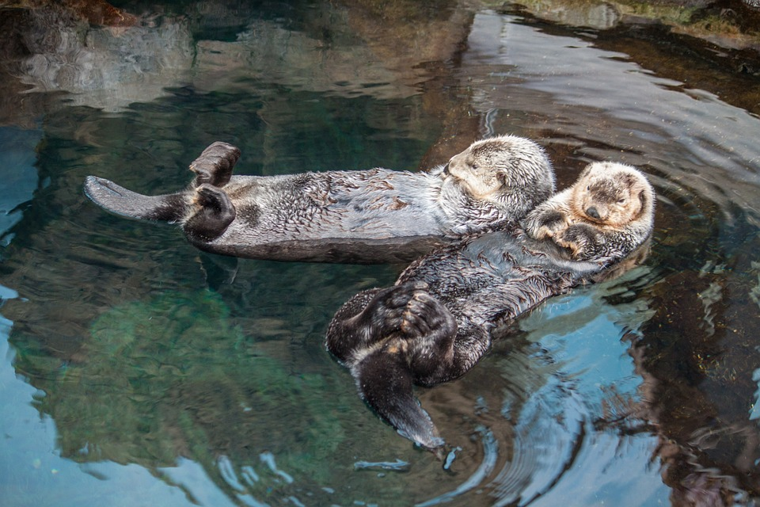
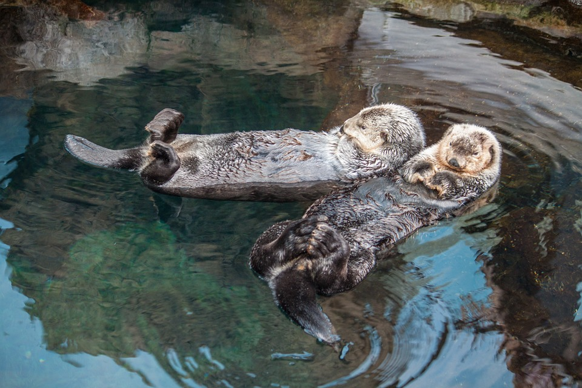
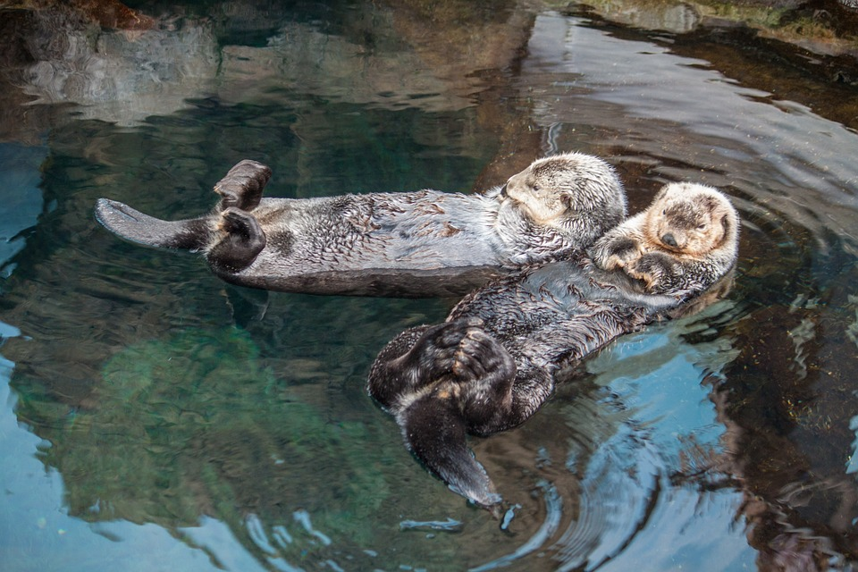

1.Otters are semiaquatic mammals that belong to the family Mustelidae, which also includes weasels, ferrets, and minks.
2.There are 13 different species of otters, and they can be found in a variety of habitats, including freshwater rivers, lakes, and wetlands, as well as saltwater coasts and oceans.
3.Otters are known for their playful behavior and are often seen sliding down muddy banks or playing with objects in the water.
4.They have dense, waterproof fur that helps keep them warm in cold water. Otters have the thickest fur of any mammal, with up to a million hairs per square inch.
5.Otters are carnivores and eat a diet of fish, crustaceans, and mollusks. They have a high metabolism and need to eat a lot to maintain their energy levels.
6.Otters have webbed feet and are excellent swimmers. They can hold their breath for up to eight minutes and can swim at speeds of up to 6 mph.
7.Many species of otters are endangered due to habitat loss, pollution, and hunting for their fur. Conservation efforts are underway to protect these animals and their habitats.
8.Otters are social animals and often live in family groups. They communicate with each other using a variety of vocalizations, including chirps, whistles, and growls.
9.Otters are known for using tools, such as rocks, to crack open shellfish. They will often keep a favorite rock in a special pouch in their armpit or under their chin.
10.Otters are popular animals in pop culture and are often featured in movies, TV shows, and children's books. Some famous otters include Ollie from the "Otter" book series and Eddie from the TV show "Frasier
To contact us Email us at Ottercafe@gmail.com
Why not also follow us on Instagram at ottercafeUk to keep up to date with anything ottercafe or anything otter.
